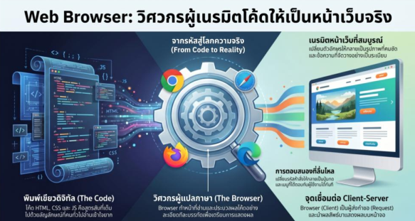
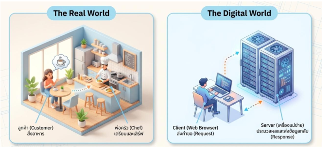
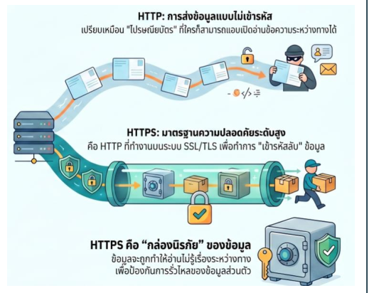
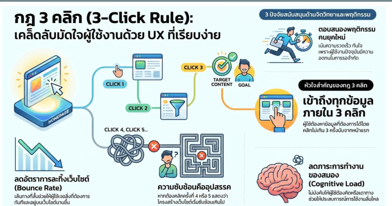

1. ความหมายและองค์ประกอบหลักของเว็บ
การพัฒนาเว็บไซต์จำเป็นต้องเข้าใจองค์ประกอบพื้นฐาน 3 ส่วนหลักที่ทำงานร่วมกัน โดยเปรียบเทียบเสมือน "หนังสือหนึ่งเล่ม" ดังนี้:
- Web Page (หน้ากระดาษ): พื้นที่บรรจุเนื้อหาเฉพาะเรื่อง เช่น บทความหรือแกลเลอรีรูปภาพ เปรียบเหมือนหน้าแต่ละหน้าในหนังสือ
- Website (หนังสือหนึ่งเล่ม): การนำ Web Page หลาย ๆ หน้ามารวบรวมและเย็บเล่มเข้าด้วยกันเป็นเรื่องเดียว
- Home Page (หน้าปกหนังสือ): หน้าแรกที่เป็นจุดเริ่มต้นและเป็นส่วนที่ผู้ใช้งานจะพบเห็นเป็นอันดับแรกเสมอ

2. ประเภทของเว็บไซต์
สามารถแบ่งประเภทตามลักษณะการทำงานและโครงสร้างพื้นฐานออกเป็น 2 ประเภทหลัก
| ประเภทเว็บไซต์ | ลักษณะเด่น | ข้อดี | ข้อเสีย | ความจำเป็น / การนำไปใช้ (So What?) |
|---|---|---|---|---|
| Static Website | เนื้อหาคงที่ ข้อมูลไม่เปลี่ยนตามผู้ใช้ | ทำง่าย, โหลดเร็วมาก, ปลอดภัยสูง | แก้ไขข้อมูลยาก ต้องแก้ที่โค้ดทีละหน้า | เหมาะสำหรับ Portfolio หรือเว็บข้อมูลที่ไม่เปลี่ยนบ่อย (โฮสต์ฟรีได้บน GitHub Pages) |
| Dynamic Website | มีระบบหลังบ้าน (Backend) และฐานข้อมูล เนื้อหาเปลี่ยนตามผู้ใช้หรือเวลา | โต้ตอบกับผู้ใช้ได้, จัดการข้อมูลจำนวนมากได้ง่าย | ซับซ้อนกว่า, ต้องดูแลฐานข้อมูล | เหมาะสำหรับร้านค้าออนไลน์ (E-commerce) หรือโซเชียลมีเดีย (มีค่าเช่า Server และฐานข้อมูล) |

3. กระบวนการทำงานของเว็บไซต์
ทำงานผ่านระบบ Client-Server Model ซึ่งเปรียบเทียบได้กับการสั่งอาหารในร้าน:
- Request (สั่งอาหาร): ผู้ใช้พิมพ์ชื่อเว็บหรือกดลิงก์ผ่าน Web Browser ซึ่งทำหน้าที่เป็น Client (ลูกค้า) ส่งคำขอผ่านอินเทอร์เน็ตไปที่ Server
- Processing (ปรุงอาหาร): Server (พ่อครัว) ทำหน้าที่ตรวจสอบไฟล์ ดึงข้อมูลจากฐานข้อมูล และปรุงออกมาเป็นไฟล์เว็บ
- Response (เสิร์ฟ): Server ส่งข้อมูลกลับมาในรูปแบบพิมพ์เขียวของโค้ด (HTML, CSS, JavaScript) ผ่านอินเทอร์เน็ต
- Rendering (ลงมือทาน): Web Browser (Client) นำไฟล์โค้ดมาอ่านและแปลงผลเป็นหน้าตาเว็บไซต์ที่สวยงาม

4. หลักการทำงานของ WWW และมาตรฐานการสื่อสาร
- URL (Uniform Resource Locator): ที่อยู่หรือลิงก์ที่ระบุตำแหน่งของหน้าเว็บหรือไฟล์บนอินเทอร์เน็ตอย่างแม่นยำ
- HTTP: ส่งข้อมูลแบบข้อความธรรมดา (Plain Text/Cleartext) ไม่เข้ารหัส เสี่ยงต่อการถูกแอบดักข้อมูลระหว่างทาง (Man-in-the-Middle Attack)
- HTTPS: มาตรฐานความปลอดภัยสูง ทำงานบนระบบ SSL/TLS เพื่อเข้ารหัสข้อมูล (Encryption), รักษาความถูกต้องของข้อมูล (Data Integrity), และยืนยันตัวตน (Authentication) ผ่าน SSL Certificate เพื่อป้องกันเว็บปลอม (Phishing)
- IP Address: พิกัด GPS หรือเลขที่บ้านของคอมพิวเตอร์ (เช่น
172.217.161.100) ที่เครื่องเข้าใจแต่จำยาก - Domain Name: ชื่อบุคคลหรือชื่อบ้าน (เช่น
google.com) ที่ตั้งขึ้นมาเพื่อให้มนุษย์จำง่าย - DNS (Domain Name System): ทำหน้าที่เหมือน "สมุดโทรศัพท์" คอยแปลง Domain Name ให้เป็น IP Address เพื่อให้คอมพิวเตอร์ตามหาไฟล์ได้ถูกต้อง

5. เครื่องมือและส่วนขยายที่แนะนำ
Visual Studio Code (VS Code) เป็นมาตรฐานอุตสาหกรรมที่นักพัฒนาเลือกใช้เนื่องจากมีความเบาและยืดหยุ่น โดยมีส่วนขยาย (Extensions) ที่แนะนำแยกตามกลุ่มดังนี้
- Live Server: จำลอง Local Server อัปเดตหน้าจอ UI แบบ Real-time ทันทีที่กด Save โดยไม่ต้องกด F5
- Live Preview: แสดงหน้าต่างพรีวิวเว็บข้างในโปรแกรม VS Code ควบคู่กับหน้าต่างเขียนโค้ดโดยไม่ต้องสลับจอ
- Thunder Client: เครื่องมือทดสอบการรับส่งข้อมูลผ่านโปรโตคอล HTTP/HTTPS (เช่น การทดสอบ API) ในโปรแกรม
- Prettier Code Formatter: จัดรูปแบบและย่อหน้าโครงสร้างโค้ดให้อัตโนมัติเมื่อกดบันทึก
- Error Lens: เจาะลึกระบุตำแหน่งและแสดงข้อความแจ้งเตือนคำสั่งที่เขียนผิดที่ท้ายบรรทัดทันที
- Code Spell Checker: ขีดเส้นใต้เตือนคำผิดภาษาอังกฤษ ลดปัญหา Syntax Error จากการพิมพ์ผิด
- Auto Rename Tag: เมื่อแก้ไขชื่อใน "แท็กเปิด" ระบบจะเปลี่ยนชื่อใน "แท็กปิด" ที่คู่กันให้อัตโนมัติ
- Auto Close Tag: เติม "แท็กปิด" ให้อัตโนมัติทันทีที่พิมพ์แท็กเปิดเสร็จ
- HTML CSS Support: ช่วยเดาและแนะนำชื่อคลาส (Class) หรือไอดี (ID) ของ CSS ในขณะที่กำลังพิมพ์